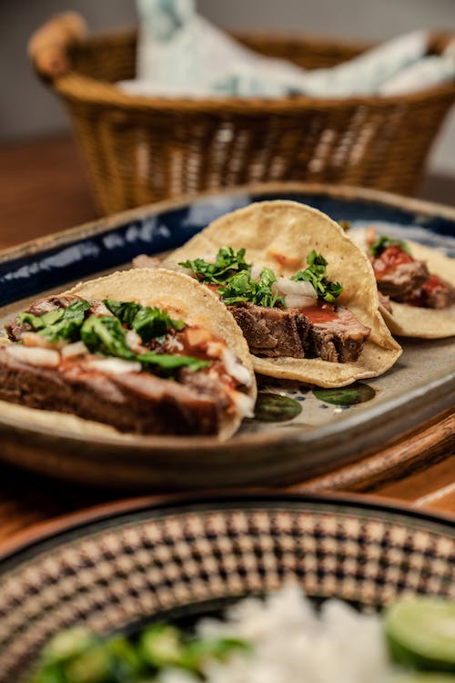
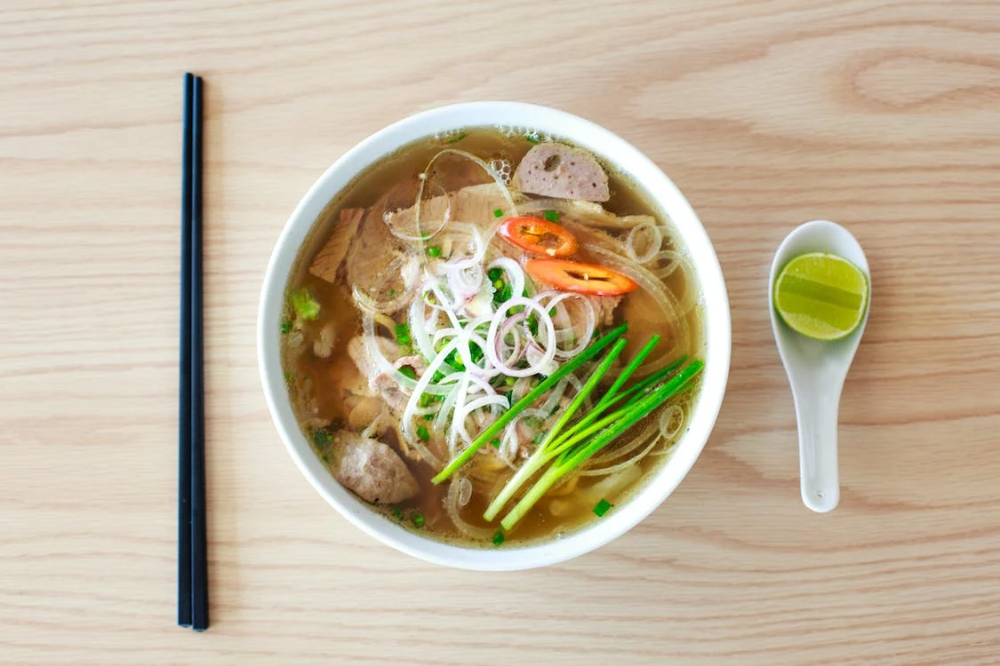
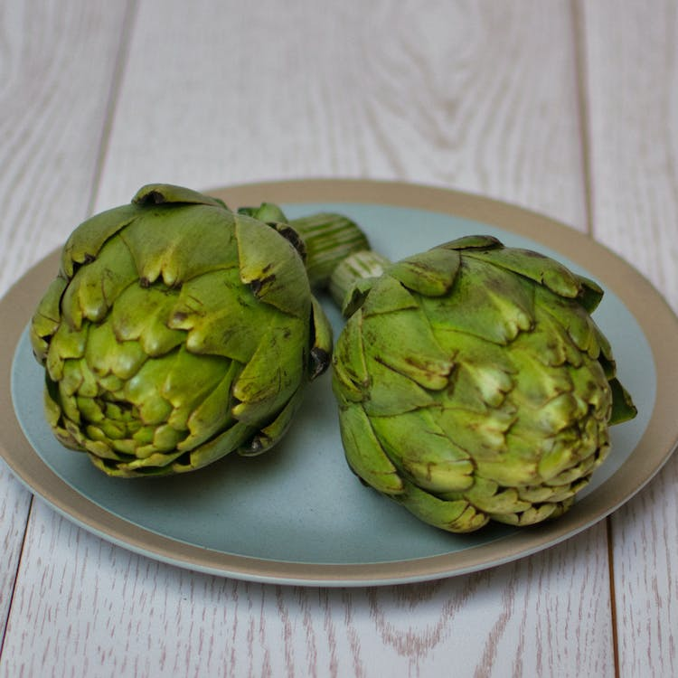

1. Crablegs
"Crab legs come in at the top of my list as number 1! Yes, they are alot of work however, they are so sweet and also perfect with lemon and butter (if you're into that sort of thing)."

"Crab legs come in at the top of my list as number 1! Yes, they are alot of work however, they are so sweet and also perfect with lemon and butter (if you're into that sort of thing)."
"Coming in at number 2 tacos are a close runner to first. Particularly Street tacos. They can be enjoyed to no matter what kind of mood you're in! vegan, vegetarian, and carnivor style are all accepted in the taco world. I could litereally eat them everyday!"
"Soup is another food that sometimes i hear: "soup isnt a meal". Totally BS some of the best food ive ever eaten has come in soup form. My favorite soup in particular would have to be vegtable!"
"Im a crazy person and eat artichokes raw, or roasted. They are great in dip, salads, or an addition to any dish."
